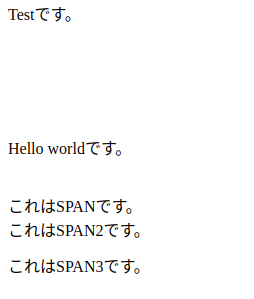
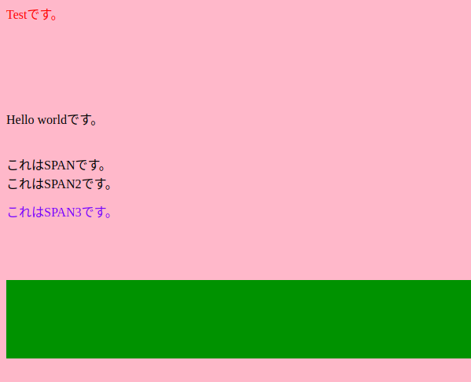

[CSS] 疑似クラス - only-child, only-of-type, empty, empty, root
こんにちは。明月です。
前述で疑似クラス nth-childとnth-of-type,first-child,fist-of-typeに関して説明しました。
link - [CSS] 疑似クラス - nth-child, nth-of-type, nth-last-child, nth-last-of-type
link - [CSS] 疑似クラス - first-child, last-child, first-of-type, last-of-type
今回の投稿ではonly-child, only-of-type, empty, empty, rootを調べると思いますが、あまり使わない選択子ですね。
それで例を確認しましょう。
<!DOCTYPE>
<html>
<head>
<style>
.test{
height:100px;
}
</style>
</head>
<body>
<div class="test">
<p>Testです。</p>
</div>
<br />
<div class="test">
<p>Hello worldです。</p>
<br />
<span>これはSPANです。</span>
<br />
<span>これはSPAN2です。</span>
</div>
<br />
<div class="test">
<span>これはSPAN3です。</span>
</div>
<div class="test"></div>
</body>
</html>

そしてCSSで「only-child, only-of-type, empty, empty, root」を作成してまましょう。
.test p:only-child{
color:red;
}
.test span:only-of-type{
color:blue;
}
.test:empty{
background-color:green;
}
:root{
background-color:pink;
}
「only-child」の疑似クラスは「test」クラスの派生タグで「p」タグが一つだけあることを探します。
そしたら「p」タグを持っている「.test」クラスのエレメントは初めの「div」タグと２つ目の「div」タグですね。でも２つ目の「div」タグは「p」タグ以外に「span」タグも持っているので、「only-child」では初めの「dev > p」タグが文字が赤くなると思います。
次は「only-of-type」です。
「only-of-type」は「only-child」と似てますが、結果は全然違います。
「p:only-child」の場合は全ての派生タグで一つの「p」タグと意味です。
「span:only-of-type」の場合は全ての派生タグではなく「span」のバグが一つだけのタグですね。
「div.test」タグを見ると２つ目と３つ目が「div」タグで「span」タグを持っていますが、２つ目の場合は「span」タグが２つですね。
３番目の「div」タグだけ対象です。
「:empty」の場合は派生のタグがないタグを調べます。参考に「<タグ>テスト値</タグ>」の形式も派生データがあることで判断します。つまり、「:empty」に選択されません。
「:root」は「html」を選択することと同じ意味です。「html」や「body」選択することと「:root」で選択することと差異があるかな。

- [CSS] 整列スタイル (float)2019/12/17 00:08:54
- [CSS] 位置(position),表示(display)スタイル2019/12/13 20:08:50
- [CSS] border(枠)、余白スタイル - border, margin, padding2019/12/12 20:16:43
- [CSS] 文字スタイル2019/12/11 21:13:22
- [CSS] その他の疑似選択子 - link, visited, target, enabled, disabled, not, active, hover, focus2019/12/10 07:31:28
- [CSS] 疑似要素選択子 - fist-line, first-letter, before, after2019/12/09 07:28:27
- [CSS] 範囲と指定に関する選択子(全体選択子、要素選択子、孫選択子、子選択子、隣接選択子)2019/12/06 07:27:36
- [CSS] 疑似クラス - only-child, only-of-type, empty, empty, root2019/12/05 07:29:15
- [CSS] 疑似クラス - first-child, last-child, first-of-type, last-of-type2019/12/04 07:28:37
- [CSS] 疑似クラス - nth-child, nth-of-type, nth-last-child, nth-last-of-type2019/12/03 07:21:20
- [CSS] 属性選択子2019/12/02 07:32:37
- [CSS] Selector(選択子)2019/11/28 07:28:03
- [CSS] CSS Stylesとは？2019/11/27 07:30:30
- [HTML] Open graph(ogタグ)2019/11/26 07:42:20
- [HTML] Metaタグに関して(SEO最適化)2019/11/25 20:16:18
- [Javascript ] WebのFull calendar(スケジュールカレンダー)の使い方法2021/07/15 21:35:36
- [Java] 56. Web serviceのサーブレット(Servlet)で初期化作業(properties設定)2021/07/02 17:10:36
- [Java] 55. Spring frameworkに文字化けを解決する方法(Encoding設定)2021/06/30 16:37:16
- [Java] 54. Spring frameworkでWeb filterを使う方法2021/06/29 18:25:12
- [Java] 53. ウェブサービス(Web service)でエラーページを処理する方法2021/06/25 13:35:54
- [Design pattern] 1-3. ファクトリメソッドパターン(Factory method pattern)2021/06/23 19:45:37
- [Java] WebSocketでチャット履歴をローディングする方法2021/06/15 18:34:45
- [Java] WebSocketを利用してユーザ(サイト運用者)が他のユーザとチャットする方法2021/06/15 17:20:08
- [Design pattern] 1-2. ビルダーパターン(Builder pattern)2021/06/11 19:06:28
- [Design pattern] 1-1. シングルトンパターン(Singleton pattern)2021/06/09 19:40:05
- [Design Pattern] デザインパターンの紹介2021/06/08 20:42:36
- [Tools] Dbeaver(無料Sql queryブラウザツール)2021/04/28 18:26:49
- [Bootstrap] HTMLデザインのフレームワークのBootstrap紹介2020/07/30 19:06:36
- [Python] メール(smtplib)を送信する方法2020/07/27 18:38:43
- [Python] HttpConnection(requestsモジュール)でウェブサーバーで接続する方法2020/07/20 14:41:51